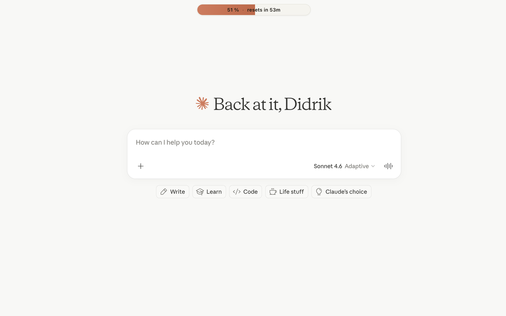
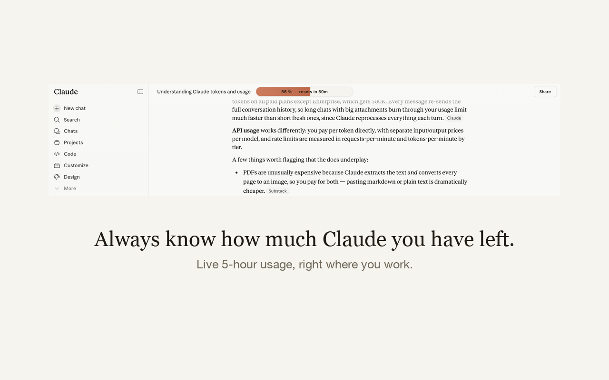

See your Claude usage limits, a live token counter and the prompt-cache timer — directly on claude.ai.
Usage Bar for Claude is a free, open-source Chrome extension that displays your Claude plan usage (5-hour limit, weekly limit, extra credits), how much of the context window your conversation has used, and a prompt-cache countdown, as a compact bar on claude.ai. It reads the same usage data as Claude's own settings page, entirely inside your browser — no account, no analytics, no external servers.
Add to Chrome — it's free

What it shows:
Install Usage Bar for Claude and open claude.ai. The bar shows your 5-hour limit usage as a percentage with a reset countdown; hovering reveals the weekly all-models limit, extra credits and Routines — the same numbers as Settings → Usage, without leaving the conversation.
The main bar is exactly that: percent of the rolling 5-hour limit used with a live “resets in …” countdown. At 100% the bar turns red, so you see it before Claude starts declining messages.
Claude.ai shows limited token information natively. Usage Bar for Claude adds a persistent context-window donut: hover it for estimated tokens used, context length consumed (e.g. 34k / 200k), and total tokens across the conversation, including edited branches.
Yes. Only same-origin requests to claude.ai with your existing session. No analytics, no telemetry, no third-party servers; conversation text is processed in memory only, never stored or transmitted. Read the privacy policy.
It displays whatever limit rows Claude's usage API returns for your account — Pro, Max, Team or free. Rows your plan doesn't have simply show as “—”.